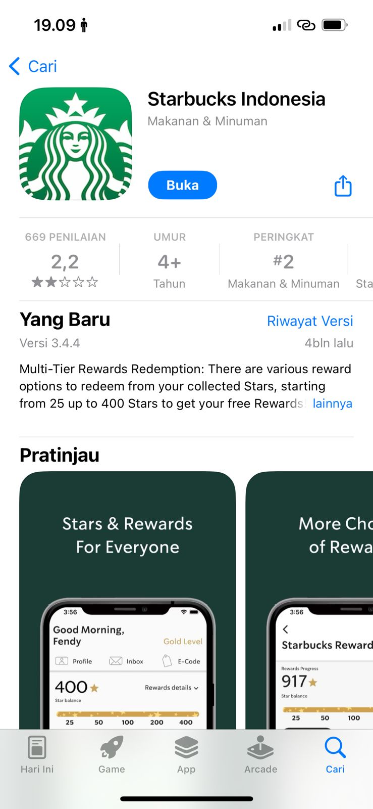
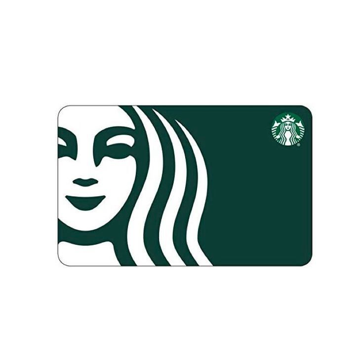
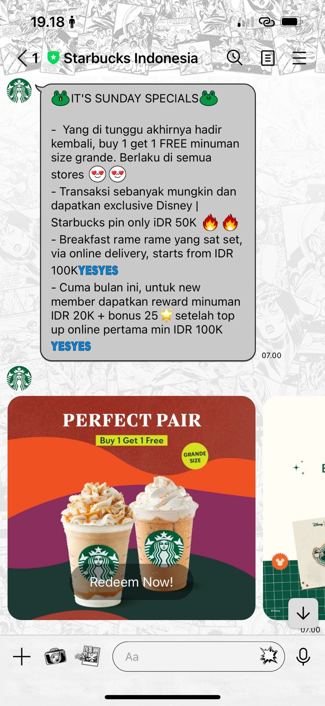
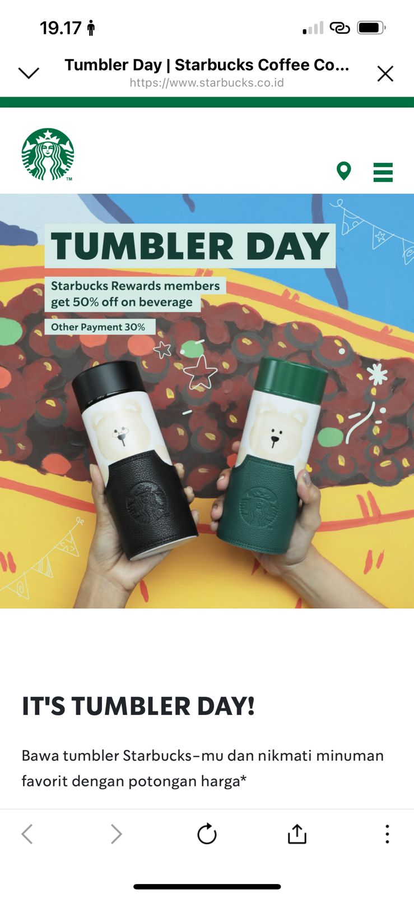

Tips&Trik
Nongki Murah di Starbucks
 Siapa sih yang gak kenal Starbucks?Merek kopi ikonik yang hampir tersebar di seluruh dunia, termasuk Indonesia.Banyak orang sangat menyukai Starbucks dan menganggapnya sebagai tempat yang nyaman untuk menikmati kopi. Banyak juga yang menggunakan Starbucks sebagai tempat untuk bekerja (WFC), rapat, atau pertemuan dengan teman atau rekan bisnis mereka. Selain faktor kenyamanan dan lokasi yang mudah ditemukan, fasilitas WiFi gratis yang ditawarkan juga menjadi faktor pendukung kenapa orang-orang senang untuk ke Starbucks.
Siapa sih yang gak kenal Starbucks?Merek kopi ikonik yang hampir tersebar di seluruh dunia, termasuk Indonesia.Banyak orang sangat menyukai Starbucks dan menganggapnya sebagai tempat yang nyaman untuk menikmati kopi. Banyak juga yang menggunakan Starbucks sebagai tempat untuk bekerja (WFC), rapat, atau pertemuan dengan teman atau rekan bisnis mereka. Selain faktor kenyamanan dan lokasi yang mudah ditemukan, fasilitas WiFi gratis yang ditawarkan juga menjadi faktor pendukung kenapa orang-orang senang untuk ke Starbucks.
Mission Statement of Starbucks :To inspire and nurture the human spirit— one person, one cup and one neighborhood at a time.
Yang artinya, Starbucks memiliki tujuan untuk menjadi lebih dari sekadar tempat untuk membeli kopi. Mereka ingin menjadi sumber inspirasi dan dukungan untuk semangat manusia. Ini mencerminkan komitmen mereka untuk menciptakan pengalaman yang bermakna dan memotivasi individu. Setiap individunya, setiap cangkir, dan setiap relasi yang terbangun.
Namun, dibalik itu semua, terdapat pandangan yang umum bahwa Starbucks terlalumahalapalagi untuk kaum mendang-mending seperti saya hehe. Eits tapi ada caranya loh untuk tetap menikmati minuman Starbucks dengan harga lebih murah. Berikut adalah tips&trik nongki murah di Starbucks :
1. Download Starbucks Apps
Aplikasi Starbucks sering menawarkan promosi dan diskon eksklusif kepada anggota Starbucks Rewards. Anda dapat melihat penawaran spesial dan mendapatkancakepada hari ulang tahun Anda.
2. Use The Starbucks Card
Dengan menggunakan Starbucks card ini, Anda dapat mengumpulkan poin setiap kali melakukan pembelian di Starbucks dan menukarkannya dengan minuman gratis atau makanan gratis lainnya.
3. Follow @StarbucksIndonesia at LINE Apps
Starbucks sering kali menggunakan media sosial untuk berbagi promosi, diskon, dan penawaran eksklusif kepada pengikut mereka. Dengan mengikuti akun LIne Starbucks, Anda bisa mendapatkan informasi tentang penawaran khusus ini dan berpotensi menghemat uang saat membeli di Starbucks.
4. Bring Your Own Tumbler
Tumbler Day jadi cukup spesial karena selain memberikan potongan 50%* setiap hari Kamis dan tanggal 22 setiap bulan untuk minuman favorit kepada pelanggan jika membawa tumbler official Starbucks, program ini juga merupakan salah satu langkah Starbucks untuk mengurangi penggunaan plastik sekali pakai di gerai mereka.
Selain tanggal 22 dan setiap hari Kamis, Starbucks juga terus mengeksplorasi cara-cara inovatif untuk membuat gerakan “hijau”, salah satunya lewat program“Bring Your Own Tumbler”yang berlangsung setiap hari. Serupa dengan Tumbler Day, program ini dilakukan Starbucks dengan memberikan potongan Rp5.000,- jika customer membeli minuman dan membawa tumbler official Starbucks-nya sendiri. Let’s create a#BetterWorldTogetherwith Starbucks!
Selain cara-cara diatas, Anda juga bisa stay tune pada akunInstagram Starbucksuntuk mendapatkan promo dan penawaran menarik lainnya.
Nama : Rahma Nurfadillah
NIM : 11210251000156